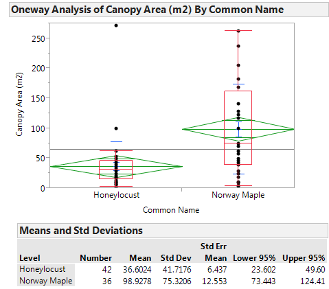
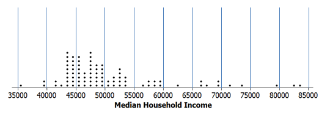

Lab 2: Using Technologies to Construct Simulation Models¶
To save time and to gather more simulated results more quickly, a software package called Tinkerplots® can be used to simulate the outcomes obtained in class in Example 1.1. The results from the simulation model can then be used to help us understand what outcomes are likely (or unlikely) to occur. This simulation model will be constructed using the following parameters (i.e., under these conditions).
| Necessary information for building a model | Deaf Example |
|---|---|
|
20 |
|
1 out of 2; i.e., \(\frac{1}{2}\) |
Setting up the Spinner in Tinkerplots
Open Tinkerkplots® on your computer. Drag a new Sampler from the tool shelf into your blank document, as shown below.

The default sampler is called a Mixer sampler which simply is a “hat” that contains three objects (two objects labeled as “a” and one object labeled as “b”). Tinkerkplots® gives you various options for the type of sampler to use. For this example, a Spinner sampler will be utilized.
Mixer Sampler (Default)
|
Spinner Sampler |
|---|---|
| The default labeling for the outcomes on the Spinner are a and b. Re-label the outcomes as Correct and Incorrect. |  |

{kind=link}
| Recall that the chance of a deaf person correctly identifying the correct color light bulb is 1 out of 2, or 50%. This value must be specified on our spinner so that the correct simulation model is used. To change the percentages on the spinner, select Show Percent from the drop-down menu in the lower left-hand corner of the spinner and enter the desired percentages. |  |
|---|---|
{kind=link}
Two additional changes must be made to the Spinner sampler.
- The Repeat value indicates the number of trials to be completed (change this to 20)
- Change the Draw from 2 to 1
The final setup of the spinner should look as follows.
{kind=link}
Questions
- Which of the following is true about the setup of this spinner?
- This spinner is meant to mimic the outcomes of a deaf person.
- This spinner is meant to mimic the outcomes of a person who is thought to be lying about their ability to hear.
Click Run a few more times. Count the number of Correct (out of 20) for each iteration of the simulation and plot this outcome on the number line below. Gather the outcomes from a few classmates in class. Does the overall trend appear to mimic the outcomes we obtained in class?

Tinkerplots® has the ability to keep a “history” of the number of correct trials obtained over repeated iterations of the simulation. This feature allows us to more easily record or keep track of the outcomes over several iterations. In order to use this feature in Tinkerplots®, we must first obtain a summary of the outcomes. A plot and count will be used as our summary here.
Drag a new Plot into an open space.
{kind=link}
Next, drag the variable to be summarized (i.e., DeafExample) onto the x-axis of the plot as is shown below on the right.
A plot summarizing the results is shown below. This
plot simply separates out the number of Correct responses.
|
 |
|---|---|
{kind=link}
Tinkerplots has the ability to automatically count the number of Correct and Incorrect outcomes. Select the “N” icon from the menu bar.

Recording the Outcomes over Repeated Iterations *To record the total number of Correct responses for each iteration of the simulation, right-click on the value for the number of Correct in your plot and select **Collect Statistic*.

| Definition |
|---|
| The *statistic* is a summary measurement computed from collected data. |
The number of Correct responses will now be recorded in the History table provided. To run additional iterations of this simulation, say 27 more to mimic our class size, put 27 in the Collect box and click Collect. This will record the statistic for an additional 27 iterations.
{kind=link}
Comment: The Collect box is used to identify the number of additional times the simulation will be repeated. Each row in the History table represents the number of correct outcomes (out of 20).
Questions
- The number correct for Iteration 1 is 11. Verify this quantity by counting the number of correct guess for this iteration.
- What is the smallest number of correct? For which iteration did this occur? What is the largest number of correct responses?
- The values in the history table should be centered around 10. Why?
***¶
Plotting the Outcomes over Repeated Iterations
Although we can see each individual outcome in the table shown above, it may be better to organize and display these outcomes using a plot.
| Drag a new Plot onto your workspace. Next, click on the variable name from your collection in which the outcomes from the repeated iterations are stored and drag this onto the x-axis of the new plot. |  |
|---|---|
| In order to see the number of 8’s, 9’s, etc. from each iteration, you should drag any point all the way to the right so that the plot displays the individual numbers. The vertical Stack button can be used to neatly stack the points. Also, the size of the plotting symbol can be reduced with the slider on the bottom of the plot. |  |
|---|---|
A dotplot showing the outcomes from the 28 repeated iterations from this simulation is shown below.

Comment:* The lower and upper limit on the number line should be set to 0 and 20, respectively. This communicates the fact that values from 0 to 20 are possible outcomes. The axis limits can be set by double clicking on the smallest axis label and entering 0 for Axis starts at. The upper limit can be set to 20 by double clicking on the largest axis label.
The Collect box can be used to obtain additional outcomes from this simulation model. For example, if the value 100 is entered in the Collect box, the graph will display a total of 128 outcomes. Each dot in this graph corresponds to the number of correct responses out of a possible 20 trials. The outcomes from my simulation model are shown below. |
 |
|---|---|
{kind=link}
On the number line below, give a rough sketch of the outcomes from your simulation model.

Questions
- What does each dot on your graph represent? Discuss.
- If an individual is really deaf, what outcomes are we likely to observe?
- What is the smallest value in your dotplot?
________________
- Is it possible to obtain a value smaller than this if more simulations were carried out?
- If one additional simulation is done, is this outcome likely to be smaller, larger, or about the same as the previous smallest value? Discuss.
- A statistician might argue that a plot based on 128 iterations of the simulation is better than a plot based on 28 iterations. Do you agree? Explain.
Questions
- What are the similarities amongst these four graphs?
- What would you consider an unusual outcome (i.e., outlier) to be in Graph A? How about Graph B?
| Developing a Rule for Identifying Outliers |
|---|
| An *outlier rule* determines the location on the distribution for which you begin to believe observations are unlikely. |
*Comments: *
- A statistician might argue that the determination of what constitutes an outlier should not be adversely affected by the number of iterations conducted in the simulation. In fact, if enough iterations of the simulation model are completed, eventually all possible values will appear on the dotplot.
- An outlier rule is used to separate likely from unlikely observations. This is the main goal of obtaining the distribution for the number of correct responses. For example, a statistician might say that a value of 6 or less would be a reasonable outlier rule. Such a rule can and should be applied consistently with any of the graphs shown above.
- In Tinkerplots®, the Divider icon from the tool shelf can be used to count the number of outcomes in a particular region in the graph. For example, there are 539 outcomes at 6 or less.
{kind=link}
Suppose a statistician decides to use 6 or less as the rule for determining when somebody is lying about their ability to hear. This rule would result in accusing a deaf person of lying about \(\frac{539}{10000} = 0.0539 \approx 5\%\) , which is about 1 out of every 20 times.
Questions
- Suppose instead of using 6 or less as the rule, 7 or less was used. Would this result in more or less deaf people being identified as lying? Would you advocate changing the rule to 7? Discuss.
- Would an insurance company who fears insurance fraud rather a statistician use the rule of 6 or less or 7 or less? Discuss.
Task:
Set up a spinner in Tinkerplots® as follows to evaluate the subject presented in the article by Pankratz, Fausti, and Peed titled “A Forced-Choice Technique to Evaluate Deafness in the Hysterical or Malingering Patient.” *Source: Journal of Consulting and Clinical Psychology, 1975, Vol. 43, pg. 421-422. *
In this study, the subject was asked to complete 100 trials (instead of 20 as used above). The Repeat value on the spinner should thus be set to 100.
Sketch the final graph obtained in Tinkerplots® for your simulation. |
 |
||||||
|---|---|---|---|---|---|---|---|
Outcome from Study |
 | ||||||
| Likely Outcomes from a Deaf Person |
Number of Correct Responses for a Deaf Person |
{kind=link}
{kind=link}
Questions:
- If a person is truly deaf, how likely is it that they would obtain 36 or less correct out of 100 trials?
NOT VERY LIKELY | SOMEWHAT LIKELY | LIKELY | VERY LIKELY
- Does your investigation support or refute the notion that the subject under investigation is most likely lying about his ability to hear? Discuss.